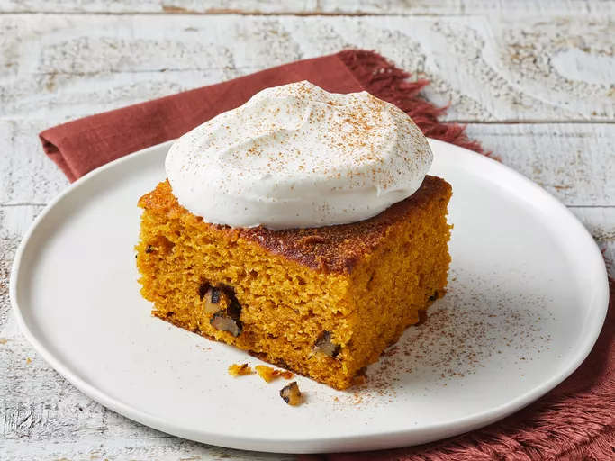

Pumpkin Cake

Description
This recipe for a delicious pumpkin cake is baked in a sheet pan.
It's lightly spiced, very moist, and great for potlucks.
When cool, top with your favorite cream cheese frosting.
Ingredients
- 2 cups all-purpose flour
- 3 teaspoons baking powder
- 2 teaspoons baking soda
- 2 teaspoons ground cinnamon
- ¼ teaspoon salt
- 2 cups white sugar
- 1 ¼ cups vegetable oil
- 2 cups canned pumpkin
- 1 teaspoon vanilla extract
- 4 large eggs
- 1 cup chopped walnuts (Optional)
Steps
- Preheat the oven to 350 degrees F (175 degrees C). Grease and flour a 12x18-inch sheet pan.
- Sift flour, baking powder, baking soda, cinnamon, and salt together in a large bowl; set aside.
- Beat sugar and oil together in a large bowl with an electric mixer until smooth.
- Blend in pumpkin and vanilla, then beat in eggs one at a time.
- Gradually beat in flour mixture until just combined.
- Stir in walnuts; spread batter into the prepared sheet pan.
- Bake in the preheated oven until a toothpick inserted into the center of the cake comes out clean, about 30 minutes. Allow to cool.